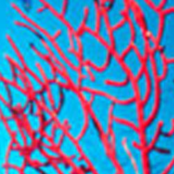

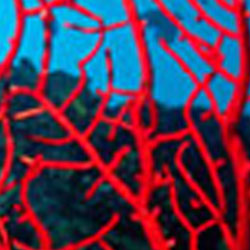
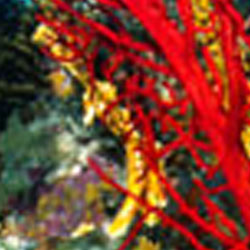
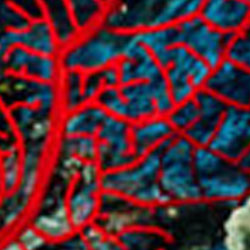
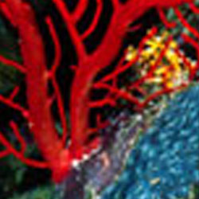
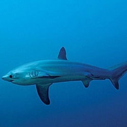
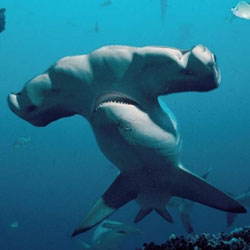
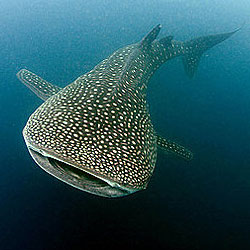
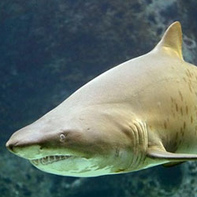
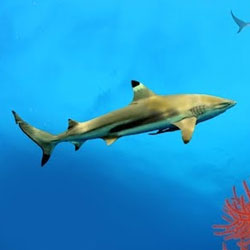
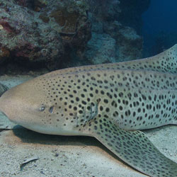
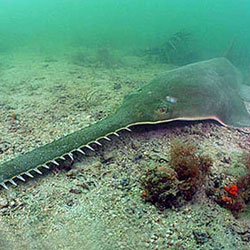
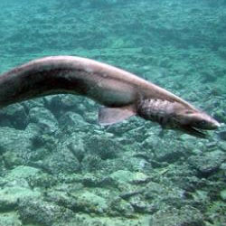
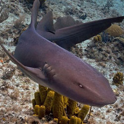
Los tiburones del fondo del mar son especies adaptadas a vivir en las profundidades oceánicas, lejos de la luz solar y en condiciones de alta presión y bajas temperaturas. A diferencia de sus parientes de aguas superficiales, estos tiburones suelen tener cuerpos más lentos y flexibles, sentidos altamente desarrollados y una apariencia peculiar, como ojos grandes o piel rugosa. Algunos ejemplos son el tiburón duende, con un hocico alargado y mandíbulas extensibles, y el tiburón anguila, que parece una serpiente marina. Muchos de estos tiburones se alimentan de peces, crustáceos y carroña, y cumplen un rol importante como depredadores en los ecosistemas profundos, ayudando a mantener el equilibrio ecológico.